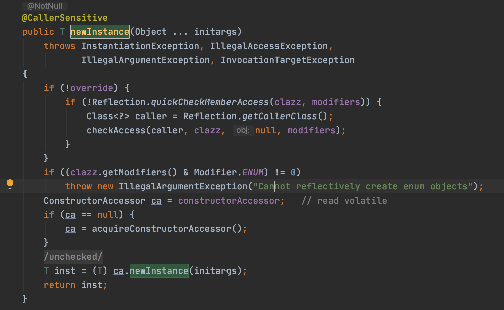

单例模式是应用最广泛的模式之一。在应用这个模式时，单例对象的类必须保证只有一个实例存在。
实现单例模式主要有以下几个关键点：
1.构造函数一般不对外开放，一般为private；
2.通过一个静态方法或者枚举返回单例类对象；
3.确保单例类的对象有且只有一个，尤其是在多线程环境下；
4.确保单例类对象在反序列化时不会重新构建对象。
常见的单例实现方式
常见的单例实现方式有懒汉模式、DCL、静态内部类单例模式。上述的几种单例模式实现中，在反序列化的情况下它们会出现重建对象。
我们知道通过序列化可以将一个单例的对象的实例对象写到磁盘，然后再读回来，从而有效地获得一个实例。即使构造函数是私有的，反序列化时依然可以通过特殊的途径去创建类的一个新的实例，相当于调用该类的构造函数。反序列化提供了一个很特别的钩子函数，类中具有一个私有的readResolve()函数，这个函数可以让开发人员控制对象的反序列化。如果想杜绝单例对象在被反序列化时重新生成对象，那么必须加入readResolve函数。
public final class Singleton implements Serializable {
private static final long serialVersionUID = 0L；
private static final Singleton INSTANCE = new Singleton();
private Singleton() {
}
public static Singleton getInstance() {
return INSTANCE;
}
private Object readResolve() throws ObjectStreamException {
return INSTANCE;
}
}
而对于枚举单例，不仅写法简单，最重要的是默认枚举实例的创建是线程安全的，并且在任何情况下他都是一个单例。
《Effective Java》在谈到枚举单例中写到：这种方法在功能上与公有域方法相近，但是它更加简洁，无偿提供了序列化机制，绝对防止多次实例化，即使是在面对复杂序列化或者反射攻击的时候。虽然这种方法还没有广泛采用，但是单元素的枚举类型已经成为实现Singleton的最佳方法。
枚举单例
枚举单例实现方式如下
public enum SingletonEnum {
INSTANCE;
public void doSomething() {
}
}
那么枚举单例是怎样保证线程安全的呢？
我们查看SingletonEnum.java文件编译后的字节码文件。如下：
可以看出，编译之后会生成一个继承自java.lang.Enum的final class SingletonEnum类，申明的枚举实例对应一个用static final修饰的变量，其初始化在静态块中完成。所以本质上线程安全也是通过类加载过程中，类构造器的调用实现了同步。
又是如何保证反射安全呢？继续看代码

原来在java.lang.reflect.Constructor类的newInstance()方法中进行了类型判断。如果是Enum类型，则会直接抛出异常。
那么，序列化安全又是如何保证的呢？
通过阅读ObjectOutputStream类的writeEnum()方法和ObjectInputStream的readEnum()方法可知，序列化时，当为Enum类型时，只会把Enum类型中定义的name
属性输出到结果中。反序列化时，就调用Enum的T valueOf(Class<T> enumType, String name)方法，根据name拿到Enum实例。
同时，编译器是不允许任何对这种序列化进行定制，因此禁用了writeObject、readObject、readObjectNoData方法。并且Enum私有化了构造函数，且禁用了clone()方法，防止通过new和克隆创造对象。